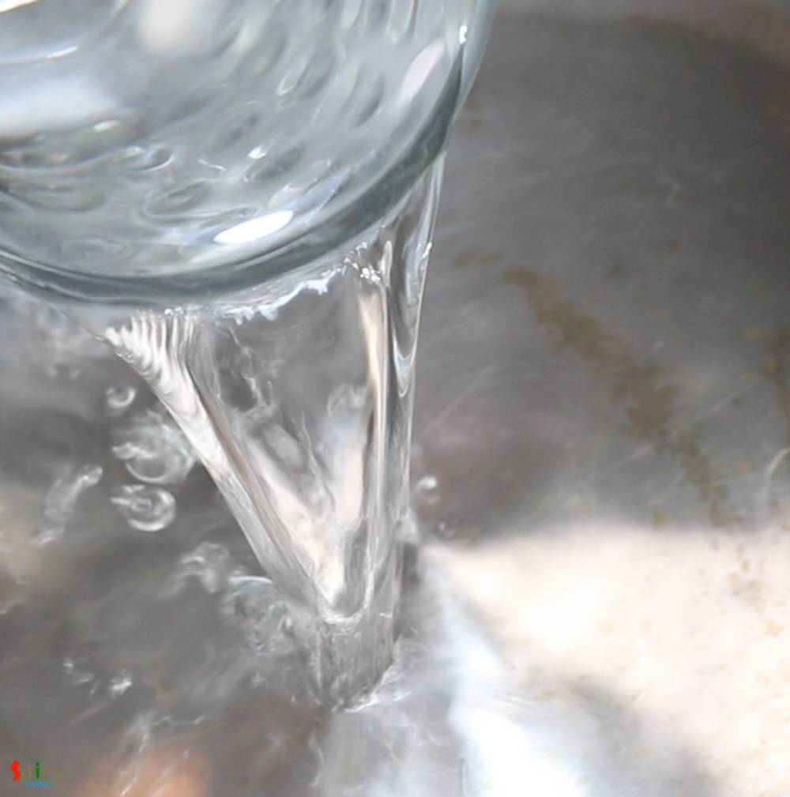
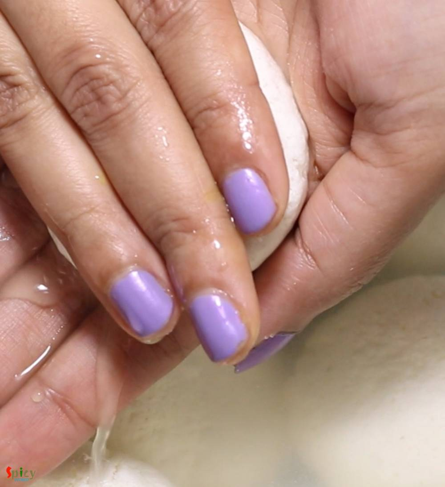
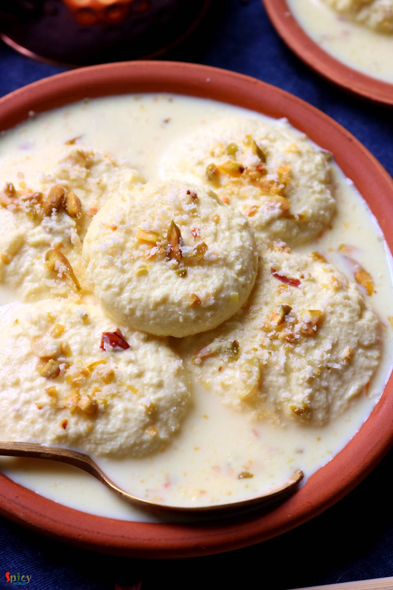

Simple and Easy Recipes
Ras Malai / Rosho Malai
By Arpita © 2016 Spicy World
Apr 23, 2019
Apr 23, 2019

Ras Malai is a very popular Indian dessert in which first we will make soft, spongy rasgullas then they will be soaked in flavored sweetened milk. It tastes so so good during summer. Always serve Rasmalai chilled. In Bengali it is called Roshomalai. You can obviously make Rasmalai with store bought Rasgulla to cut down the time and effort. Do try this recipe in your kitchen and let me know how it turned out for you.

Ingredients
- For Rasgulla:
- 2 liters of full fat milk.
- Half cup of beaten full fat yogurt / 4-5 Tablespoons of lemon juice or vinegar.
- 2 Teaspoons of all purpose flour or maida.
- 4 cups of water.
- 2 cups of sugar.
- For Malai:
- Half liter and half cup of full fat milk.
- 1 Teaspoon of cardamom powder or 2-3 green cardamom pods.
- Half cup of condensed milk or little less than 1 cup sugar.
- Chopped cashews and pistachios.
- Pinch of yellow food color or Saffron. (optional)
{kind=link}
{kind=link}
Steps
Heat 2 liters of full fat milk in a sauce. Keep stirring with spatula in every 2-3 minutes.
When the milk starts bubbling, reduce the heat to low and add yogurt/lemon juice/vinegar. Mix well with milk.
After few minutes you will see the paneer.

Turn off the heat and let it rest for 2-3 minutes.
Then in a cotton cloth lined strainer strain the paneer.
Rinse it gently with cold water.

Squeeze the cloth tightly to remove extra water. Do not make the paneer very dry.
Now take out the paneer in a plate and start mashing it for 2-3 minutes with the back of your palm.

Add all purpose flour, mix well for another 2 minutes.
Now make small flat balls out of the mashed paneer.

In 4 cups of water add 2 cups of sugar. Mix well and let the water comes to boil.
When the syrup starts boiling add 5-6 paneer balls. Do not overcrowd the pan.
Cover the pan and cook on medium flame for 10-12 minutes.

They will become double in size. Gently flip them and cook for another 10 minutes.
Make rest of them like this way.
In hot syrup add a glass of chilled water or 3-4 ice cubes.
Add all the cooked rasgullas and let them rest for 30 minutes.
In another pan heat half liter and half cup of full fat milk.
When the milk starts boiling add green cardamom, condensed milk, chopped nuts. Mix well and boil the milk for 10 minutes. Keep stirring.

Add food color or saffron, mix well. Do not make the milk very thick.
Now take one rasgulla within your palm and press gently to remove extra syrup.
Do not put very much pressure.
Do the same with all of the rasgullas and then drop them in hot milk mixture.

Cook for another 2-3 minutes on medium flame and turn off the heat.
Please do not put any kind spatula for stirring after adding the rasgullas otherwise they will break.
Just hold the pan and keep shaking gently for 3 to 4 times.
When the Rasmalai will come to room temperature, keep them in fridge for 1 hour, then serve.

Additional Info
Recipe Category: Desserts
Recipe Cuisine: Indian
Preparation Time: 10 minutes
Cooking Time: 90 minutes
Serves: 8
Your Ras Malai is ready to serve.
- Serve this chilled ...

All Images and Recipes are copyrighted to Spicy World.
For more recipes visit us at http://spicyworld.in
Leave Your Comments